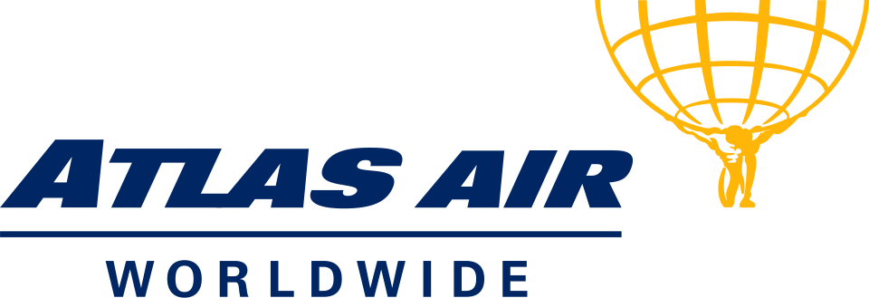

아틀라스 항공 Atlas Air
아틀라스 항공(Atlas Air)은 미국 뉴욕 해리슨에 베이스를 둔 화물 항공사이다. 북아메리카, 아시아, 유럽, 중동으로 정기 카고편을 운항하며 테드 스티븐스 앵커리지 국제공항을 메인 베이스 공항으로 사용한다.
최종 업데이트

아틀라스 항공은 어떤 브랜드인가
아틀라스 항공은 비용이 저렴하고 장거리 수송에 용이한 전문 항공 화물사로 설립된 화물 항공사이다. 북아메리카, 아시아, 유럽, 중동으로 정기 카고편을 운항하며, 유럽, 아시아, 아프리카, 오스트레일리아, 태평양, 아메리카 전 지역에 걸쳐 화물 전세기와 여객 전세기도 운항한다.
허브 공항으로는 로스앤젤레스 국제공항, 마이애미 국제공항, 조지 부시 인터콘티넨털 공항, 존 F. 케네디 국제공항이 있다.
폴라에어 카고와 공동으로 운항하며, 특정 목적지는 고객의 요구와 계절 화물 항공편 동향에 따라 달라진다. 2011년 현재 세계에서 3번째로 큰 화물 수송 전용 항공사로 알려져 있다.
회사 명칭은 그리스 신화의 아틀라스에서 유래했다.
아틀라스 항공은 어떻게 시작되고 성장했나
1992년 파키스탄 출신인 마이클 차우드리가 비용이 저렴하고 장거리 수송에 용이한 전문 항공 화물사를 설립했다. 1993년에 중화항공으로부터 보잉 747 기종을 임대해 운항했다.
1995년 미국 증권 거래소인 나스닥에 상장되었고 1997년에는 뉴욕 증권 거래소에 상장되었다. 2001년 폴라에어 카고를 인수해 계열사로 편입했으며, 이로써 아틀라스 항공은 부정기 부문을, 폴라에어 카고는 정기선 부문의 네트워크 및 마케팅을 확보하게 되었다.
2004년 7월에는 구조 조정이 완료되어 파산을 신청했다.
아틀라스 항공의 브랜드 아이덴티티는 무엇인가
그리스 신화의 아틀라스에서 이름을 따 비행기 꼬리 부분에 황금 세계를 메고 다니는 황금 인간을 그린 화물 전문 항공사이다.
아틀라스 항공의 대표 제품과 서비스는 무엇인가
아틀라스 항공은 지금 어떤 상태인가
2011년 현재 세계에서 3번째로 큰 화물 수송 전용 항공사로 알려져 있다. 2010년에는 항공기 안전 및 유지 관리 사고에 연루되어, 보잉 747의 분리 플랩 조립체 커버 분리와 오른쪽 날개 안쪽 날개 일부 손상 사건이 있었다.
부적절한 유지 보수 관행을 이유로 미국 연방 항공국이 대략 50만 달러의 벌금을 부과했으나, 항공사는 사실이 아니라고 주장해 법적 공방으로 이어졌다.
아틀라스 항공 로고는 어떻게 변해왔나
자주 묻는 질문
아틀라스 항공는 어느 나라 브랜드인가요?
아틀라스 항공는 미국의 모빌리티 브랜드입니다.
아틀라스 항공는 언제 설립되었나요?
아틀라스 항공는 1993년 설립되었습니다.
아틀라스 항공의 브랜드 아이덴티티는 무엇인가요?
그리스 신화의 아틀라스에서 이름을 따 비행기 꼬리 부분에 황금 세계를 메고 다니는 황금 인간을 그린 화물 전문 항공사이다.
아틀라스 항공의 대표 제품은 무엇인가요?
사업은 정기 카고편과 화물 전세기, 여객 전세기 운항으로 이뤄지며, 유럽, 아시아, 아프리카, 오스트레일리아, 태평양, 아메리카 전 지역이 대상이고 전세기 노선에는 휴스턴과 루안다를 잇는 국제선이 있다.
아틀라스 항공는 현재 어떤 상태인가요?
2011년 현재 세계에서 3번째로 큰 화물 수송 전용 항공사로 알려져 있다.
아틀라스 항공의 본사는 어디에 있나요?
아틀라스 항공의 본사는 Purchase에 있습니다(위키데이터 기준).
아틀라스 항공의 공식 웹사이트는 어디인가요?
아틀라스 항공의 공식 웹사이트는 https://www.atlasair.com 입니다.
출처와 검증
아틀라스 항공 관련 참고: 공식 웹사이트 · 위키데이터 Q757135 · 한국어 위키백과 · 영어 위키백과. 브랜드명은 한글과 원어를 함께 표기하되 데이터에 없는 표기는 만들지 않습니다. 기원 국가·설립연도는 검수된 정의문에서 확인된 값을 우선하고, 없을 때만 공식 웹사이트 URL이 일치하는 위키데이터 개체의 값을 씁니다. 위키데이터 값은 2026-11-14 기준입니다.